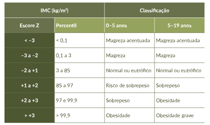

Em crianças e adolescentes, a classificação do IMC é baseada nas curvas padrão de crescimento da OMS, de 0 a 5 anos, e nas curvas de referência, de 5 a 19 anos. A tabela seguinte apresenta a classificação do IMC nas duas faixas etárias.
Tabela 2 - Classificação do índice de massa corporal (IMC) em crianças e adolescentes.

Fonte: Melo, 2019.
Além do IMC, a análise da porcentagem e da distribuição da gordura corporal são igualmente importantes, porém de difícil mensuração. Na ausência desses indicadores, adota-se a medida da circunferência abdominal. Embora o valor de referência varie de acordo com a etnia, a Federação Internacional de Diabetes estabelece como ponto de corte para risco cardiovascular aumentado a medida de circunferência abdominal igual ou superior a 94 cm em homens e 80 cm em mulheres. Ao fazer um diagnóstico de obesidade, é indispensável avaliar a função da tireoide, por intermédio da dosagem de hormônio tireotrópico (TSH) e tiroxina (T4) livre.